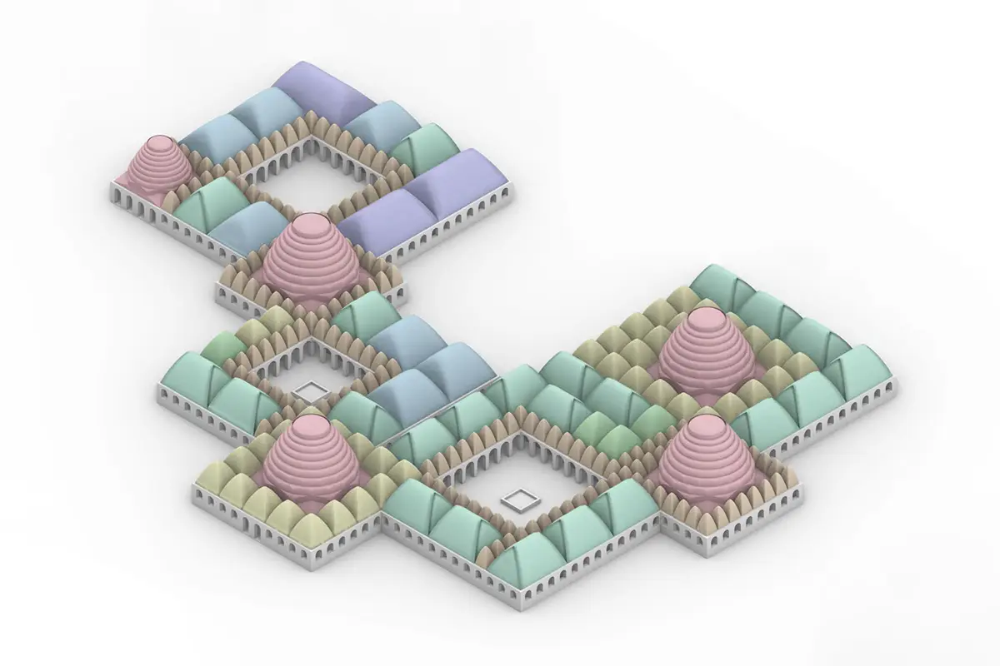
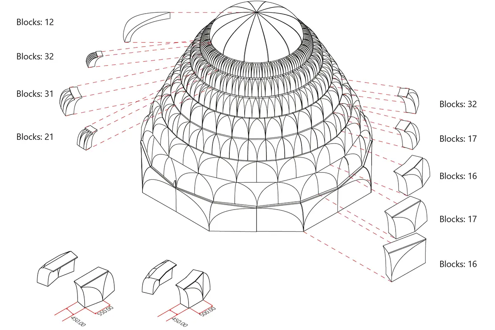
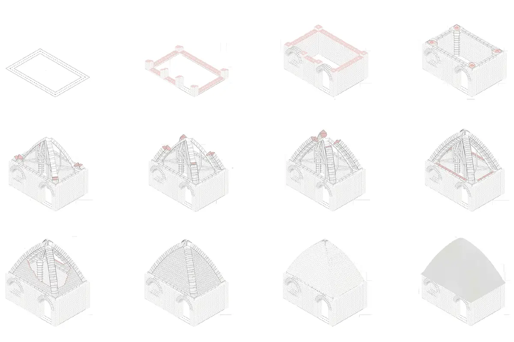
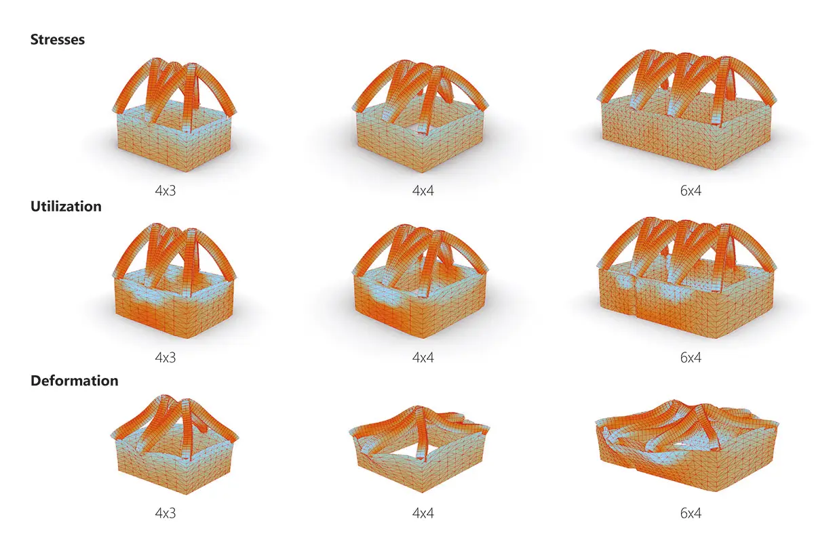

Design Studio - TU Delft 2021
Location: Zataari Refugee Camp, Jordan
Team: Alexsander Coelho, Juan Cruz, Georgina Giassia, Thomas Lindemann
Supervisor: Dr. Pirouz Nourian, Shervin Azadi
Computational Design ArchitectureThe concept of the design studio „Earthy“ is the development of semi-temporary accommodations and buildings for the refugee camp „Zataari“ in Jordan. Buildings are to be created from local materials such as compressed earth blocks. The construction process needs to be highly simplified so that camp inhabitants can participate in the construction themselves. “Shifa´s Mosaics” is translated with “Mosaics of Healing” and tackles the typology of a healthand- wellness centre for the camp. In the first step, the ideal location for the centre was defined by computing the camp region with the most need for these services.
Then, a room program was created that reflects the requirements and wishes of the camp inhabitants. Incorporating the historic typology of the courtyard house, a generative design methodology was developed to produce valid spatial configurations, centred around courtyards. One iteration was chosen to detail further. With rib vaults and muqarnas, suitable roof constructions are generated for each space. Finally, the construction is validated with a structural analysis and assembly guidelines are produced to support the camp inhabitants with the construction.